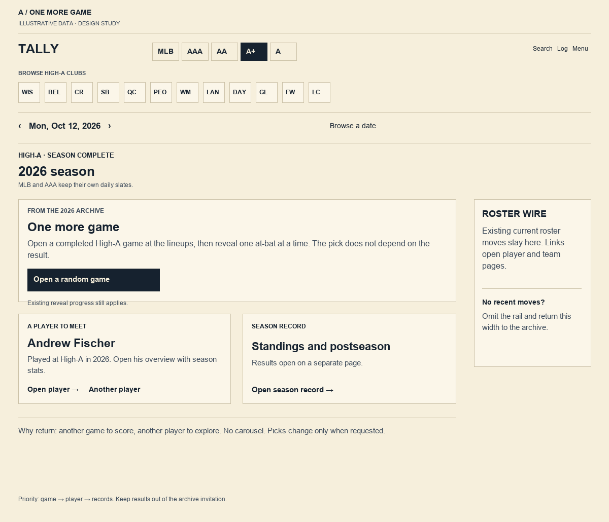
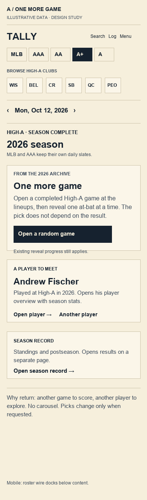
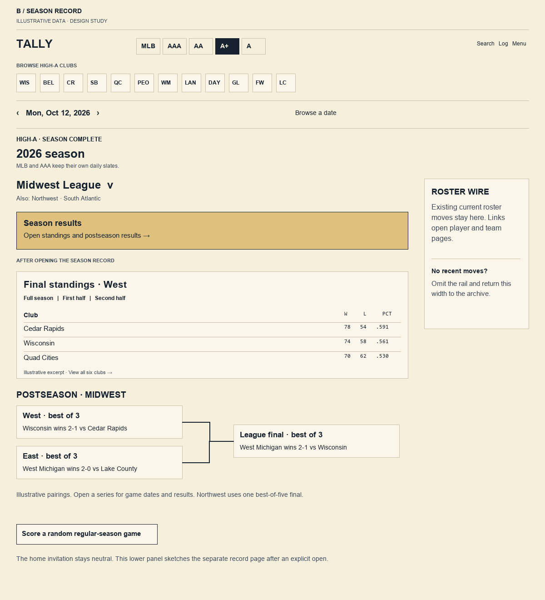
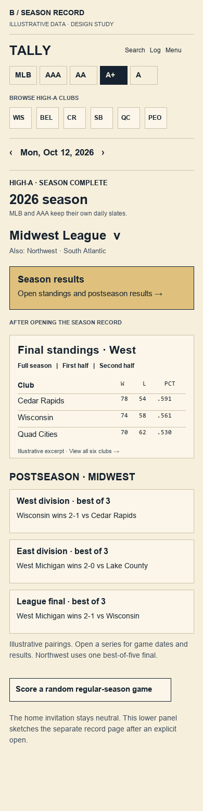
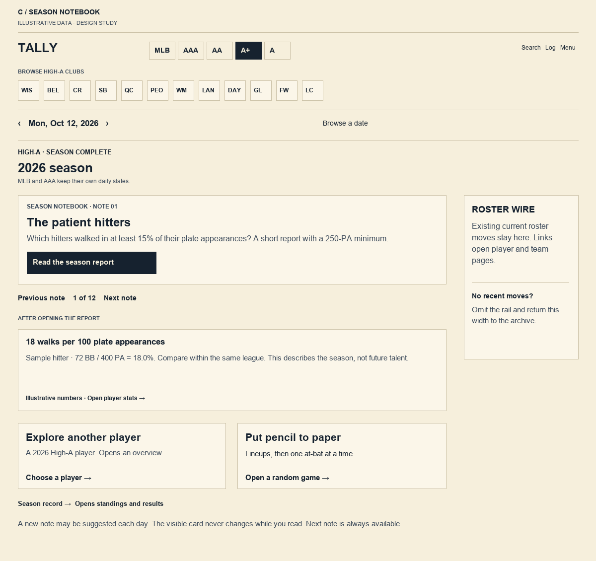
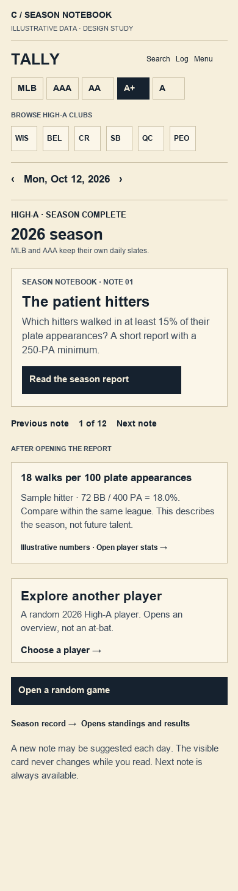

TALLY BASEBALL / DESIGN STUDY / 14 SEPTEMBER 2026
Baseball to return to.
Three ways to use the daily-games area after a minor-league level finishes. Recommendation: A · One more game, which leads back to Tally's existing lineups and at-bat flow.
Local wireframes only. All board data is illustrative. Club initials stand in for logos. These are static drawings, not production screens. B and C include a labeled preview of what opens after the home action; those results would not sit below a sealed invitation in the actual home DOM.
The current home page displays one level at a time. Keep its level selector, club strip, date navigation and roster wire. Switch only the current-day games area when that level's competitions are verified complete. An idle day is not the offseason.
A · One more game
Primary job: choose a completed game to score. One dominant action, then a player to meet and a season-record link. Random picks change only when requested. Saved reveal progress and existing consent still apply.

Desktop · 1200 px. Open the image for full size.
Mobile · 390 px. Same information order; roster wire keeps its existing dock behavior.First version: one frozen season, a modest pool of checked regular-season games, a season-player pool, and clearly labeled links to official results. No new replay engine.
B · Season record
Primary job: understand how the season finished. Select a league, then explicitly open standings and postseason results. The destination uses full-season and half-season tables. Round cards adapt to each league's real structure.

Desktop · 1200 px. Lower panel is a separate result-page preview, not default home content.
Mobile · 390 px. Vertical rounds avoid horizontal bracket scrolling.Best role: a permanent reference destination and a companion to live postseason games. Northwest needs one best-of-five final; AAA needs two league finals and one national game.
C · Season notebook
Primary job: discover a worthwhile season detail. A plain question leads to a short report, selection criteria, and player/game links. Manual Previous and Next keep the page stable. A later daily suggestion can change on arrival, never while reading.

Desktop · 1200 px. Report preview is shown only to explain the destination.
Mobile · 390 px. One subject at a time; no automatic movement.Best role: an enhancement once a small set of distinct, checked reports exists. Avoid a content treadmill and tiny-sample leaderboard claims.
Choose the main reason to visit
Concept comparison| Criterion | A · Game | B · Record | C · Notebook |
|---|
| Usefulness | Paper scoring | Season and qualification reference | Discovery and context |
|---|
| Repeat visits | Many distinct games | Strong during postseason | Short visits for new questions |
|---|
| Accessibility | Simple action order | Captioned tables; vertical rounds | Stable focus; plain definitions |
|---|
| Spoilers | Neutral pool; existing game seals | Explicit results destination | Neutral event-report invitations |
|---|
| Data gap | Verified game/player indices | MiLB adapters and competition map | Frozen facts and report criteria |
|---|
| Relative effort | Small–medium | Medium–large | Medium for aggregates; large for events |
|---|
Read the full study for league rules, primary sources, verified API coverage, transition states, calendar rollover, spoiler rules, report thresholds and implementation decisions.